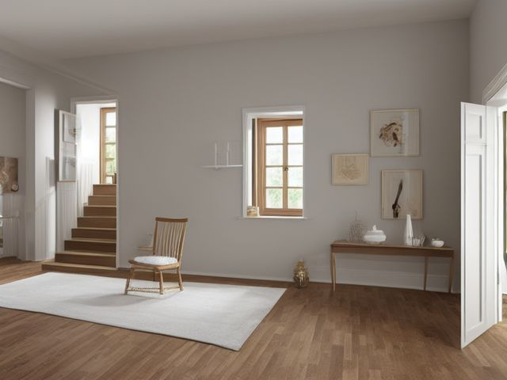

Stair Landing micro zone
The Wall and Display Zone
The frames, mirror and any sconces on the stairway wall, hung so they stay put and never crowd the shoulder of someone climbing with their arms full.
One session: 30-45 min. most of it in Safety, since press-testing and rehanging hardware takes far longer than dusting glass

What done looks like
Every frame level and hung from two points, each one the same vertical distance above the tread nose below it, so the gallery climbs on the stair's diagonal rather than fighting it. No sawtooth hanger and no single nail anywhere on the flight. Nothing projects more than a hand's width from the wall at shoulder height, and the mirror at the turn sits flat with no play when you push up on it.
Check these before you start
- Fall, cut, or crushA framed picture coming off a stairway wall lands on treads and shatters across several steps at once, in the one place you cannot sweep from a standing position.
- FallReaching sideways to level a frame while standing on a tread puts your weight outside your feet on the least forgiving surface in the house.
The six passes, in order
Work them in this order. Sorting after you have arranged things means arranging things you were about to remove.
Sort
Decide what stays. Everything else leaves the zone now.
Take down anything hanging from a single nail or a sawtooth hanger, any frame with cracked glass, and the pictures you honestly last looked at years ago. You watch your feet on stairs, not the wall, so this wall only earns what you stop on the landing to look at.
Straighten
Give what stays a home, placed where the hand actually reaches.
Set the spacing by measuring from each frame's centre down to the nose of the tread beneath it and holding that number constant up the flight. Equal gaps between frames, and one consistent bottom edge across the flat landing section.
Shine
Clean it, and use the cleaning to inspect what you cannot see when it is full.
Dust the top edge of each frame first, then the glass, then wipe the wall along the turn where shoulders, bags and laundry baskets rub a grey line. As you take your hand off each frame, look behind it at the wire for kinks and at the hook for a bent lip.
Safety
Make the zone safe for everybody who uses it, including the shortest person.
Stair walls take constant vibration, and single nails and sawtooth hangers work loose in them. Everything here hangs from two points on hardware rated well above the item's weight, and the mirror goes into a stud or a proper wall anchor. Never straighten a high frame while standing on a tread. Do it from the flat landing or a properly footed ladder.
Standardize
Write down the best way you know today, so it survives you forgetting.
One hanging system across the whole wall, two hooks and a wire, so a replacement frame never quietly reintroduces a nail. Put a dated sticker on the back of the lowest frame recording the last time you press-tested the flight.
Sustain
Attach the reset to something that already happens, so it keeps itself.
Handrail day is also frame day. As you work up the rail with your cloth, push up and out on the two frames within arm's reach. Over a season the whole wall gets checked without ever becoming a job you had to plan.
The heavy mirror you would rather not touch
There is one piece on this wall you already suspect is too heavy for what is holding it, usually the mirror at the turn or the big frame over the middle of the flight. You have left it because taking it down means finding a stud, patching a hole and repainting a stairwell you would need a ladder for. Make this call with your hands, not your eye. Grip it and push up and out. If it lifts off the wall with any play in the hook, it is being held by friction and gravity on a surface that shakes every time someone runs down. Rehang it today on two rated anchors, or take it down and leave the wall bare until the right hardware arrives. A bare stairway wall is not a failure. It is safer than heavy glass hanging over steps.
Cleaning it properly
Clean down the diagonal, top frame to bottom, glass then frame then the wall behind. The line most people walk past is the grey smear at shoulder height on the turn, where bags and baskets rub the wall.
Inspect as you clean. Cleaning is the only time you see the zone empty, so use it.
- As your hand leaves each frame, look at the wire for kinks or rust and at the hook for a bent or opening lip, and flag any frame you find hanging from a single nail or a sawtooth hanger.
- Push gently up under the mirror as you wipe it and note any play or movement against the wall.
- Watch the wall along the turn for a soft, bulging, or stained patch that can mean damp tracking down behind the plaster.
- On a sconce, notice a warm or discoloured fitting, a scorched shade, or a bulb that flickers as you dust near it.
- Flag any frame that has crept out of line or drooped since last time, since the constant vibration of a stair wall is what quietly works hardware loose.
The standard that keeps it fixed
Two hanging points and rated hardware on every item, nothing projecting more than a hand's width at shoulder height, and the mirror fixed to a stud or a proper wall anchor.
Reset trigger. When you wipe the handrail on your weekly pass, press-test the two frames closest to your hand.
Next in this room
- The Landing Surface or Console, the zone before this one
- The Stair and Floor Path, the zone after this one
- All 3 micro zones in the Stair Landing
Related reading
- What is 6S?
- This zone's safety pass, in full
- Is one spot in this zone always the one you skip?
- Why this zone gets messy again
- Decluttering vs. organizing
- Before you buy storage for this zone
- Still does not fit, even after the honest count?
- Does something in this zone actually get used somewhere else?
- Stuck on one item in this zone?
- Written the standard, but nobody else follows it?
- Does everyone in the house agree what "done" looks like here?
- Does more than one person use this zone?
- Found a duplicate of something in this zone?
- Why the standard above names one home per category
- Is the everyday item in this zone actually the easy one to reach?
- Not sure whether to keep something in this zone?
- Does this zone keep running out of something?
- Started this zone and stalled partway through?
When you want it off the screen
Carry The Wall and Display Zone into the room
The method above is complete and free. The Whole House Print Pack puts The Wall and Display Zone and the other 113 micro zones on 684 printable cards, so the steps you just read are not stuck behind a phone screen while your hands are full.
The Print Pack, 19 dollarsJust this zone, 4 dollarsOr draw a card free
The Wall and Display Zone on its own is 4 dollars for 6 cards. All 114 micro zones is 19 dollars for 684. The whole house is the better buy; the single zone is here so you can take only what you are working on.
If The Wall and Display Zone keeps fighting back, the real problem usually sits somewhere else in the room. A one hour virtual consult is 250 dollars: we find the function, the friction and the root cause together, and you keep a written standard for the space. See what a consult covers.